Agent-centric-real-to-sim · 归档于 2026-11-05
RialTo
Reconciling Reality through Simulation: A Real-to-Sim-to-Real Approach for Robust Manipulation
arXivPDF Project pageCodeGUIAssets
归档到 Agent-centric real-to-sim：把真实场景扫成 digital twin，用它训 robust policy；第二相关 Robot learning in simulation（RL fine-tuning + teacher-student）。
TL;DR
- Problem
- 15 条 demo 学出的 imitation policy 一遇到换位姿、杂物、人为打断就崩；RL 能学恢复行为，但真机上又慢又不安全，手工搭仿真又贵。
- Idea
- 手机扫一下 + GUI 切 mesh、加 joint，造出部署现场的 twin；把真机 demo 的 policy 放进 twin 重放，拿到带 state 的 sim demo（inverse distillation）；PPO + BC 加固；再蒸馏回点云 policy，并和真机 demo co-train。
- Result
- 6 个任务平均成功率 91 / 77 / 75%（pose / distractors / disturbances），BC 25 / 11 / 5%（§IV-A，Fig. 5）。人工：一个 twin 平均 14:40 active、25:12 总时长（§VI，Table XIV），15 条 demo 30 分钟（§IV-A）。机器：每个任务约 2 天 3 小时（§XIV）。
Problem
15 条 demo 学不到恢复行为；RL 学得到，但要一个便宜又够真实的地方试错
Running example · 后面每个 stage 都跟着它走
Kitchen toaster（Fig. 1 的主例子，一间真实厨房；论文有时也叫它 microwave）：输入 iPhone 扫描的厨房 + 15 条真机 demo + 单个标定深度相机的点云 → 想要：Franka 把门拉开到 toaster_joint > 0.65 且夹爪张开（§VIII），而且在 加杂物、移动机器人底座、有人把门关回去 时还能成功。
flowchart LR IN["例子输入
厨房 toaster
15 条真机 demo"]:::example IN --> A1["Imitation learning
只拟合 demo"] A1 --> AX["动作超不出 demo
toaster 30 / 20 / 20%"]:::gap IN --> B1["RL from scratch
twin 里，0 demo"] B1 --> BX["钻 twin 的空子
sim 62%，从底部顶开"]:::gap IN --> C1["合成资产训练
Objaverse，无 twin"] C1 --> CX["目标物体上不灵
drawer 真机 10%"]:::gap IN --> D1["RL from vision
sparse reward"] D1 --> DX["探索不到成功
drawer 35 h 后 1%"]:::gap
数字顺序 pose / distractors / disturbances（Fig. 5）。第 2 条是 sim 里的成功率（Table III，Fig. 15），论文判断它不能迁到真机，没有真机测。第 3、4 条论文没在 toaster 上做，用最近的 Open drawer（Fig. 7，Fig. 14）。"坏在哪"第 1 条是我按 §I、§IV-A 的解释概括的推断。真机上直接跑 RL 论文没做，只在 §I 说慢且不安全。
根本问题：恢复行为不在 demo 里，RL 又需要安全的试错场所、低维 state，以及防止它钻仿真空子的约束。 这篇的切入点：只为这一个部署现场造 twin，用真机 demo 同时解决 RL 的探索和物理 gap。
Related work
| 相关工作 | 解决什么 | 怎么解决 | 和本文的区别 |
|---|---|---|---|
| 同一问题 · 别的解法 | |||
| Imitation learning Diffusion Policy、ALOHA、RT-1、Mandlekar et al. | 从示教学视觉控制器 | BC，靠大数据或生成式增强提泛化 | 动作超不出数据，扛不住物理扰动 → 本文用 RL 补出 demo 没有的行为 |
| Sim-to-real RL，合成资产 Visual Dexterity、RMA、ARNOLD、GenSim | 仿真里学控制器再迁真机 | domain randomization、sys-ID、teacher-student、多样资产 | 靠重工程或大量资产，难进家庭场景 → 本文只建目标场景，sparse reward + 真机 co-train |
| 已有 real-to-sim-to-real（本文所属） NeRF2Real、Phone2Proc、NeRF in the Palm；Liu et al.、Wang et al. | 用重建场景帮 policy | 多数只用重建的外观；少数在重建环境里交互 | 没有物理交互，或形状简化、只会抓 → 本文 twin 带碰撞和 joint，学 6-DoF 和开门 |
| 相似做法 · 别的问题 | |||
| 自动造 twin Ditto、URDFormer、DiffCloud | 从观测得到铰接或可形变资产 | 3D 重建、inverse graphics | 论文说两者兼容 → 本文选人工 GUI，标注还能反哺这类方法 |
| Demo 辅助 RL DAPG、Nair et al.、AWAC、RLPD | 稀疏 reward 下加速 RL | demo 引导探索，或 offline 到 online 微调 | demo 只管探索 → 本文还让 demo 把解拉向物理上可信、能回到真机的行为 |
来源：论文 §II Related Work、§IV-C1，未另行检索。
Level 1 · Big picture
先造这个厨房的 twin，再把 demo 搬进去用 RL 加固，最后蒸馏回点云 policy 上真机
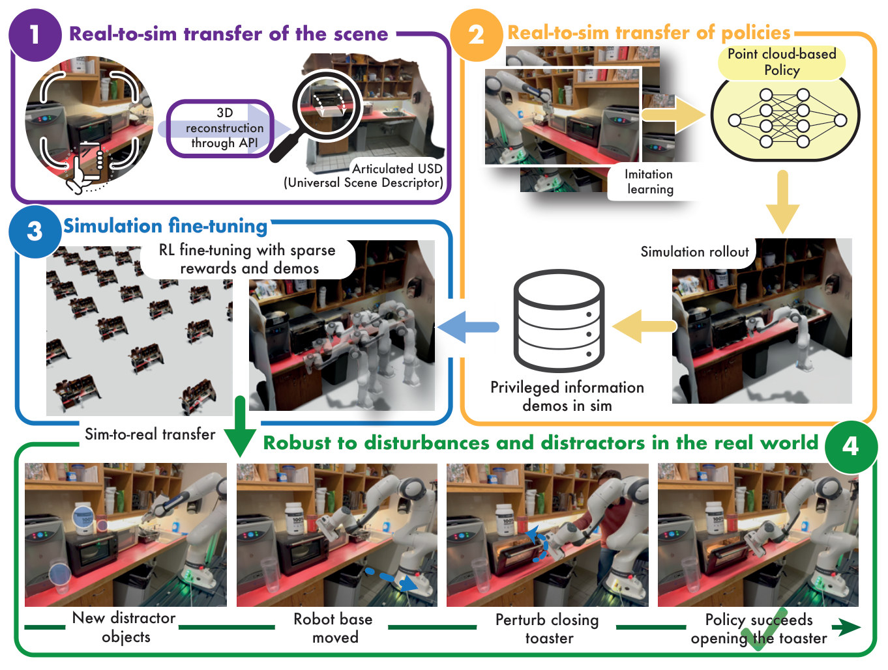
怎么读这张图
- 紫框 1 "Real-to-sim transfer of the scene"：手机扫厨房，"3D reconstruction through API" 出 "Articulated USD"；放大镜里是能转动的 toaster 门。
- 橙框 2 "Real-to-sim transfer of policies"：真机图像 → "Imitation learning" → "Point cloud-based Policy" → "Simulation rollout" → "Privileged information demos in sim"。论文说这一步可选。
- 蓝框 3 "Simulation fine-tuning"：左边一片并行环境，"RL fine-tuning with sparse rewards and demos"，右边是多个 Franka 残影。
- 绿框 4 "Robust to disturbances and distractors in the real world"：四张真机图依次是 "New distractor objects"、"Robot base moved"、"Perturb closing toaster"、"Policy succeeds opening the toaster"。
flowchart LR I["Input
iPhone 扫描
+ 15 条真机 demo"]:::example --> M["在 twin 里加固
PPO + BC
sparse reward"]:::win M --> O["Output
点云 policy
toaster 真机 90%"]
Level 2 · Stages
4 个 stage，15 条真机 demo 进两次
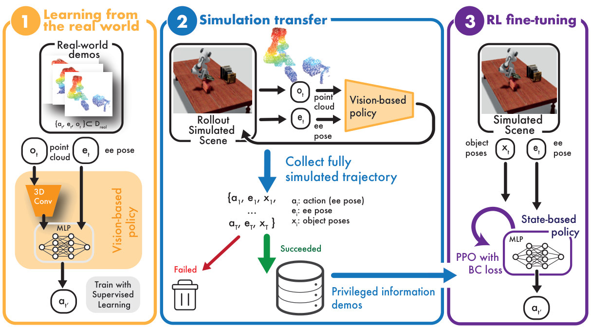
图里的符号
| 符号 | 白话 | 在 toaster 里 |
|---|---|---|
o_t | 这一刻的观测：3D 点云 | 单个 RealSense D435 看到的厨房，总点数 6000（Table VII） |
e_t | 夹爪末端的位姿（ee pose） | Franka Research 3 的末端 |
a_t | 动作：末端小幅移动，14 选 1 | 每轴 ±0.03 m、每轴 ±0.2 rad、夹爪开 / 关（§VIII） |
x_t | 物体位姿：只有仿真才知道的 privileged state（论文叫 Lagrangian state） | toaster 的位姿和门的 joint 值 |
D_real | 真机 demo 集合 | 15 条 |
D_sim | 仿真里收到的成功轨迹，带 state | 15 条 |
怎么读这张图
- 橙框 1 "Learning from the real world"：真机 demo（点云、末端位姿、动作）进 "3D Conv" + "MLP"，"Train with Supervised Learning"，得到 "Vision-based policy"。这是 Stage 2 的前半。
- 蓝框 2 "Simulation transfer"：同一个 policy 在 "Rollout Simulated Scene" 里跑，吃渲染的点云；"Collect fully simulated trajectory" 把物体位姿一起存下，红箭头 "Failed" 进垃圾桶，绿箭头 "Succeeded" 进 "Privileged information demos"。这是 Stage 2 的后半。
- 紫框 3 "RL fine-tuning"：输入换成物体位姿和末端位姿，"State-based policy" 用 "PPO with BC loss" 训练。这是 Stage 3。Stage 1 和 Stage 4 不在这张图里（分别见 Fig. 2 和 Eq. 2）。
flowchart TD IN["Input
iPhone 扫描的厨房"]:::example --> S1 R["真机 demo
15 条，点云 + 动作"]:::example S1["1 · Real-to-sim scene
kitchentoaster3.usd"] --> S2["2 · Inverse distillation
15 条带 state 的 demo"] R --> S2 S2 --> S3["3 · RL fine-tuning
teacher sim 91–96%"]:::win S3 --> S4["4 · Student + co-training
点云 policy"] R --> S4 S4 --> OUT["Output
真机 90 / 90 / 90%"] click S1 href "#stage-1" click S2 href "#stage-2" click S3 href "#stage-3" click S4 href "#stage-4"
点击 stage 展开 Level 3 细节；物理参数全靠默认值，补偿机制见 贯穿全程：用 demo 代替 system identification。
Level 3 · Details
每个 stage 的细节
Stage 1 Real-to-sim transfer of the scene 手机扫描 → 带 joint 和物理参数的 USD
- Why：扫描出来是一整块 mesh：物体连在一起，没有 joint，没有质量和摩擦，不能直接训 policy（§III-B）。
- 扫描（现成工具，§XII）：Polycam 扫大场景（用 iPhone 深度，细节差）；AR Code 扫能 360° 绕一圈的单物体；NeRFStudio 扫细结构（如 dish rack，桌面 GPU 约 10 分钟，Poisson 出 mesh）。
- GUI：上传、缩放、摆放 → 加物体（可从 Objaverse 取）→ cut mesh → add joint → 下载 USD。
- 物理（§VIII-A）：全场景一套默认值：摩擦 0.5、joint 摩擦 0.1、质量 0.41 kg。
- 碰撞（§VIII-A）：convex decomposition，64 hull vertices、32 convex hulls；只有 dish rack 例外，用 SDF，分辨率 256。
- 输出：场景
S= 分开的 mesh + 运动学关系 + 物理参数，存成 USD / URDF。
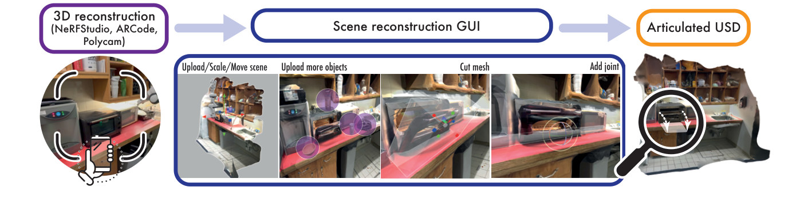
怎么读这张图
- 左 "3D reconstruction (NeRFStudio, ARCode, Polycam)"：手机对着 toaster 所在的台面。
- 中 "Scene reconstruction GUI"：四格依次 "Upload/Scale/Move scene"、"Upload more objects"（紫圈是加的物体）、"Cut mesh"（半透明切面切下 toaster 的门）、"Add joint"（圆环是转轴）。
- 右 "Articulated USD"：放大镜里的门已经能动。
人工时间账本（论文报告的全部）
| 谁的时间 | 这一步 | 时间 | 来源 |
|---|---|---|---|
| 人，active | 扫大场景 | 3:14 | §XIII-A，Table XIV 均值 |
| 人，active | 从 mesh 切出一个物体 | 3:40 | 同上 |
| 人，active | 加一个 joint | 2:54 | 同上 |
| 人，active | 再扫一个小物体 | 4:50 | 同上 |
| 人，active 合计 | 1 场景 + 1 cut + 1 joint + 1 物体 | 14:40 | §VI，Fig. 9 |
| 等待，idle | 两次处理 + 上传 | 约 10:32 | 我用 Table XIV 算的均值 |
| 总时长 | 同一个场景 | 25:12 | §VI，Fig. 9 |
| 人 | 收 15 条真机 demo | 30 min | §IV-A |
| 对照：人 | BC 收 50 条 demo | 1 h 45 min | §IV-A |
| GPU | 7 h + 20 h + 24 h（RTX 2080 或 3090） | 2 天 3 小时 | §XIV |
论文没报告的人工：写 success function、定随机范围、把 twin 和机器人及相机对齐、收 sim demo。toaster 这个 twin 自己花了多久论文也没写，表里是 6 人研究的均值，研究场景并不是机器人任务场景（见 E10）。
flowchart LR a["扫描
Polycam 厨房
单独扫 toaster"] --> b["GUI
切门
加 revolute joint"] b --> c["USD
0.5 / 0.1 / 0.41 kg"]
Running example 在这一步
iPhone 扫厨房 → 单独把 toaster 扫一遍换进去 → 切下门，门和机身之间加 revolute joint → kitchentoaster3.usd（Table IV）。厨房本身用固定 joint 钉住，防止被推动（§VIII-A）。
Stage 2 Inverse distillation 15 条真机 demo → 15 条带 state 的 sim demo
- Why：RL 在 state 上才快（E9），但真机 demo 没有物体位姿，也没有 state estimation 系统（§III-C1）。
- How：用 BC 在真机点云上训
π_real(a|o)→ 放进 twin 吃渲染点云 → 只留成功轨迹 → 同时存点云、动作和 state。 - 关键：仿真里点云和 state 天然配对，所以 demo 不用标注就有了 state。名字里的 inverse，是因为它把常见的 state → 点云蒸馏方向反过来（"inverse" 的解释是我的推断）。
- 可选：可以跳过这步，直接在仿真里收 demo（§IV-C2）。§IV-A 明说 Fig. 5 的结果走的是这条路：15 条 sim demo 起步，再和 15 条真机 demo co-train。
- 门槛（Table X）：book on shelf 少于 15 条真机 demo 时，policy 转不进仿真，收不到 sim demo，于是 RL 等于从零开始，0%；open drawer 5 条就够（89%）。
flowchart LR a["BC
15 条真机 demo"] --> b["twin 里 rollout
渲染点云当输入"] b --> c["只留成功
15 条 (o, a, s)"]
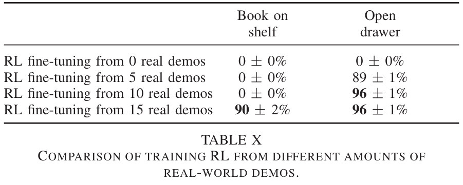
Running example 在这一步
键盘遥操作的 15 条 toaster demo → 点云 policy → 在 kitchentoaster3.usd 里跑，成功条件 toaster_joint > 0.65 && gripper_open → 失败丢弃，凑够 15 条。这些轨迹里已经有门的 joint 值和 toaster 位姿。
Stage 3 RL fine-tuning in simulation 15 条 sim demo + twin → state-based teacher
- Why：要解决两件事：sparse reward 下探索不到成功，以及学到的行为要能回到真机（§III-C2）。
- Reward：只有 success function，不做 dense shaping；每个任务一行条件（§VIII）。
- How：PPO 外加一项 BC，让 policy 保持给 sim demo 里的动作高概率。
- 网络（§IX-A，Table VI）：MLP 256, 256，输出 14 类动作的 Categorical；BC weight 0.1，BC batch 32，PPO batch 31257；基于 Stable Baselines 3。
- 随机化：初始机器人、物体、目标位姿（Table IV）。
- 时间：平均 20 小时收敛（§XIV）。
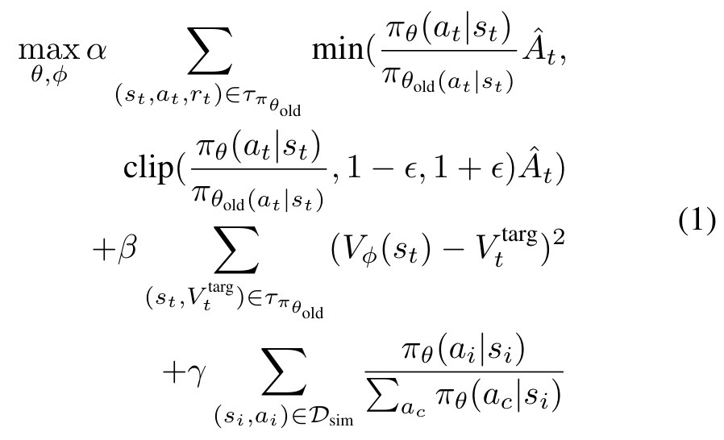
式子里的符号
| 符号 | 白话 | 在 toaster 里 |
|---|---|---|
π_θ、π_θold | 正在训的 policy、上一轮的 policy | state → 14 个动作的概率 |
s_t | 全部物体位姿 + joint 状态 + 机器人状态（§VIII） | 含门的 joint 值 |
Â_t | 这一步比预期好多少（advantage） | 门开过 0.65 的那条轨迹，分数高 |
ε | 每轮 policy 最多变多少 | 论文没列，用 SB3 默认 |
V_φ、V_t^targ | 价值网络的估计、它的目标 | 和 actor 共用第一层 |
a_c | 所有候选动作，分母把概率归一化 | 14 个 |
α, β, γ | 三项的权重 | γ 应对应 BC weight 0.1（推断） |
怎么读这个式子
- 第 1、2 行：标准 PPO：多做得分高的动作，但每轮改动有上限。
- 第 3 行：价值网络拟合回报。
- 第 4 行：新增的：在 sim demo 的状态上，提高 demo 动作的概率。这一项既给了探索起点，又把解拉在 demo 附近，防止钻仿真空子。
flowchart LR a["state 输入
门 joint + 机器人"] --> b["PPO + BC 项
BC weight 0.1"] b --> c["Teacher
π*_sim(a|s)"]
Running example 在这一步
每条 episode 130 步（Table IV），reward 只看 toaster_joint > 0.65 && gripper_open。15 条真机来源的 demo 微调到 91 ± 1%，15 条 sim demo 到 96 ± 1%；不用 demo 也有 62 ± 2%，但它从 toaster 底部顶开门，利用的是 joint 放得略偏（Table III，Fig. 15）。
Stage 4 Teacher-student distillation + co-training state teacher + 15 条真机 demo → 真机点云 policy
- Why：真机没有 state，部署只能用点云；sim 和真机的点云还有 gap（§III-D）。
- 第 1 轮（§IX-B）：teacher 跑轨迹，四份数据等概率各 1/4：15000 条全物体点云（从 mesh 直接采样，看得到所有面）、5000 条相机视角点云、带 distractors 的轨迹、15 条真机 demo。
- 第 2 轮 DAgger：student 自己跑，teacher 重新标动作；再和 distractor 轨迹、真机 demo 各 1/3 混合。
- Distractors：在这一步加（Fig. 12 的书、水瓶、台灯、头盔等）。
- 网络（§IX-A2）：Convolutional Occupancy Network 编码点云（local point net + 3D U-Net，32³ 网格），max + avg pool 成 128 维，和 9 维机器人状态拼起来，再过 MLP 256, 256。
- 点云增强（Table VII）：共 6000 点，机械臂采样 3000，物体 mesh 采样 1000；dropout 0.1–0.3，jitter 比例 0.3，噪声 N(0, 0.01)。
- 时间：收轨迹、蒸馏、DAgger 共 24 小时（§XIV）。
§IX-B 写带 distractors 的轨迹是 2000 条，Table VIII 写 1000 条，论文前后不一致。
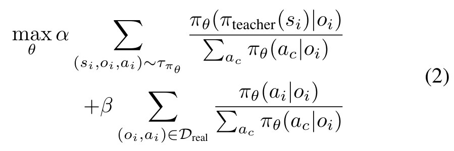
式子里的符号
| 符号 | 白话 | 在 toaster 里 |
|---|---|---|
π_θ(·|o_i) | student：只看点云的 policy | 最后上真机的那个 |
π_teacher(s_i) | teacher 在同一时刻会选的动作 | Stage 3 的结果 |
τ_πθ | student 自己跑出来的轨迹（DAgger） | 在 twin 里 |
D_real | 真机点云和动作 | 同样那 15 条 |
α, β | 两项的权重，实现上是采样比例（推断，依据 §IX-B 的等概率采样） | 各数据集 1/3 |
怎么读这个式子
- 第 1 行：student 走到哪，teacher 就在哪告诉它该选哪个动作。
- 第 2 行：同时要记住真机点云上的正确动作，这一项把 sim 和真机的感知 gap、动力学 gap 一起拉回来（§IV-B）。
flowchart LR a["Teacher 轨迹
全物体 + 相机视角
+ distractors"] --> b["蒸馏 + DAgger
+ 15 条真机 demo"] b --> c["Student
π*_real(a|o)"]:::win
Running example 在这一步
仿真相机放在和真机接近的位置 [0.0, -0.37, 0.68]，裁剪 ±0.8，640×480（Table V）。student 在真机上 pose / distractors / disturbances 都是 90%（Fig. 5）；sim 里 90 ± 4%，真机 90 ± 9%（Table XIII）。
贯穿全程 用 demo 代替 system identification 假设的物理 → 靠真机数据约束
- Why：精确估物理参数要大量交互（§III-B）。本文干脆不估，所有物体用同一组默认值。
- 补偿 1（Stage 3）：BC 项把 RL 的解拉在 demo 附近，避开只在这组假设物理下才成立的动作（§III-C2）。
- 补偿 2（Stage 4）：真机 demo co-train，同时缩小视觉和动力学 gap（§IV-B）。
- 补偿 3：闭环点云 policy 本身能在运行中纠错（§IV-A）；sim 故意做得比真机难（§XI-F）。
- 适用范围：论文自己限定为较 quasi-static 的问题，控制器也跑得慢（§VII）。
flowchart LR a["假设物理
0.5 / 0.1 / 0.41 kg"]:::gap --> b["BC 项
别离 demo 太远"] b --> c["真机 co-train
Table XIII 看不出 gap"]:::win
Running example 在这一步
门的 joint 摩擦只是默认 0.1，joint 位置还略偏。不加约束时 RL 会钻这个空子（Fig. 15）；有 demo 时 policy 走的是从门把手拉开的方式（推断，依据 Fig. 1 和项目页视频）。
Recap：例子覆盖了论文的哪些 idea
| 论文里的 idea | 例子里在哪体现 |
|---|---|
| 手机扫描 + GUI 造 twin | Stage 1：Polycam 扫厨房，切门，加 revolute joint |
| 人工成本可量化 | Stage 1 账本；E10：14:40 active，线性公式 Eq. 3 |
| Inverse distillation | Stage 2：15 条 demo 经 twin 变成带门 joint 值的轨迹 |
| Sparse reward，不调 reward | Stage 3：只看 toaster_joint > 0.65 |
| Demo 同时帮探索、防钻空子 | Stage 3：有 demo 91–96%，无 demo 62% 且从底部顶 |
| Teacher-student + DAgger | Stage 4：state teacher 教点云 student |
| 真机数据 co-train | Stage 4：15 条真机 demo 再用一次 |
| Distractor 训练 | Stage 4 加杂物；Fig. 1 绿框的 "New distractor objects" |
| 默认物理 + demo 补偿 | 贯穿全程：joint 摩擦 0.1，不做 sys-ID |
| 抗干扰的闭环恢复 | E1 视频：门被关回后再去拉 |
| "为一个现场造 twin"胜过"造很多合成资产" | 例子只有这一间厨房；对照实验在 E4（drawer） |
Results
在目标现场的 twin 里 RL，比只 imitate、只用合成资产、从零 RL 都稳，twin 的人工约 15 分钟
顺序同论文：E1 比 BC → E2 多收 demo 够不够 → E3 真机 co-train 的贡献 → E4 一定要 twin 吗 → E5 真机 demo 能换成 sim demo 吗 → E6 不受控场景 → E7 distractor 训练 → E8 没有 demo 行吗 → E9 直接 RL from vision 行吗 → E10 人工多少 → E11 sim 和真机差多少。E1–E7 比真机成功率，E8 比 sim 成功率，E9 比训练时间，E10 比人工时间，E11 对照 sim 和真机。
E1RialTo 比纯 imitation 更抗干扰吗？§IV-A
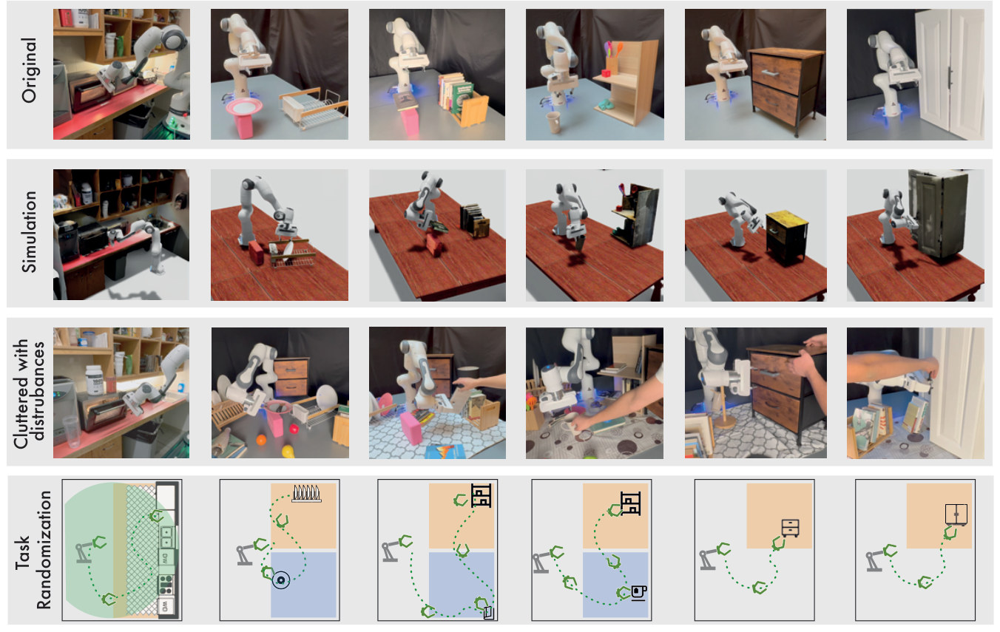
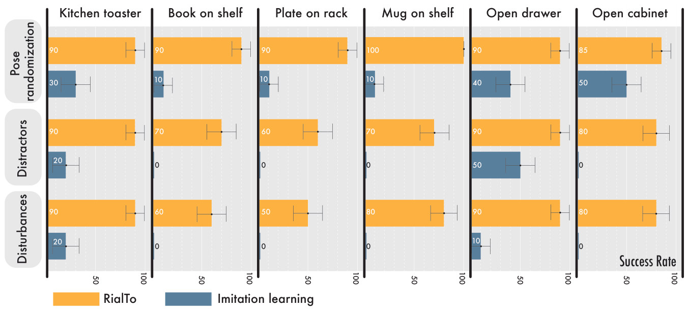
- 说明什么
- 成功率高得多，且不随难度掉到 0。6 个任务平均 RialTo 91 / 77 / 75%，BC 25 / 11 / 5%（§IV-A）。论文的"67%"按这组数算是百分点差（(66+66+70)/3，我的计算）。
- 在故事里
- 主结论：RL 加固后的 policy 有 demo 里没有的恢复行为。
- 指标
- 真机成功率，每种方法取最好的 policy，至少 10 次 rollout 的均值 + bootstrapped 标准差（§IV）。sim 成功条件见 §VIII；真机上怎么判定论文没单独写。
- 怎么评测
- Franka + 单个标定深度相机；6 个任务 × 3 档：pose 随机 → 加 distractors → 运行中人为扰动（移物体、关门、动底座）。
- RialTo 这里用的是 15 条 sim demo 起步 + 15 条真机 demo co-train（§IV-A），不是纯真机 demo 版本。
- BC = 15 条真机 demo，同样的点云预处理和随机化（§IX-D）。RialTo 多了 15 条 sim demo 和约 2 天 GPU。
E2多收几条 demo 能赶上吗？§IV-A
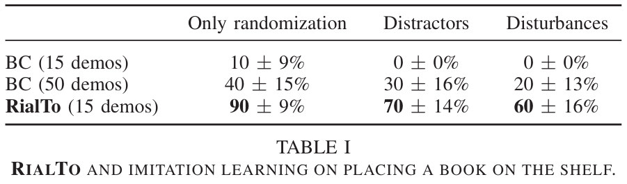
- 说明什么
- 人工更少，成功率约 2.5 倍。BC 收 50 条要 1 h 45 min；RialTo 收 15 条 30 min + 建场景 15 min active（§IV-A）。
- 在故事里
- 排除"只是数据不够"。
- 指标
- 同 E1；任务是 book on shelf。
- 怎么评测
- 只在这一个任务上比。
- 推断：RialTo 这行 90 / 70 / 60 和 Fig. 6 的 "sim demos and real co-training" 完全相同，所以它实际用了 15 条 sim + 15 条真机 demo，而收 sim demo 的时间不在这笔账里。纯真机 demo 版本是 70 / 70 / 70。
E3Co-train 真机数据有用吗？§IV-B
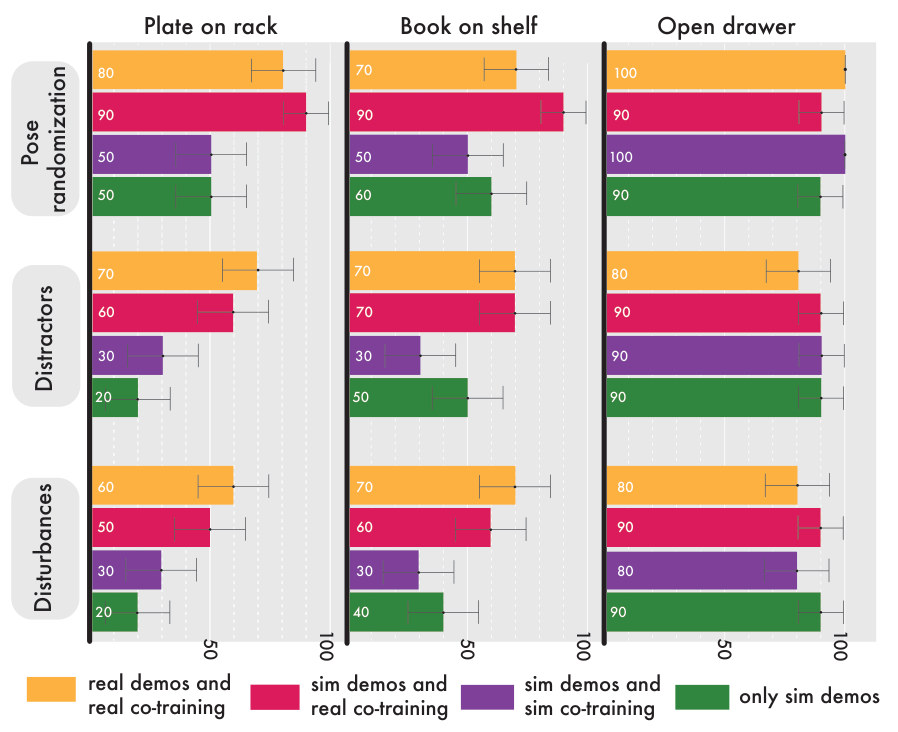
- 说明什么
- 难任务上更稳，简单任务上持平。Book on shelf Disturbances 70、60 对 30、40；Open drawer 80–90 全部接近。定性上 co-train 的 policy 更保守，抓取前离物体更远（§IV-B）。
- 在故事里
- 真机 demo 补的是 sim-to-real gap，不只是多一份数据：同样数量的 sim co-train 明显更差。
- 指标
- 同 E1。
- 怎么评测
- 3 个任务（§IV-B 正文另提 mug on shelf，图里没有）。
- §IV-B 写 "3.5x and 2x"（book、plate，disturbances），但我从 Fig. 6 读到的是 70/30 ≈ 2.3 倍、60/30 = 2 倍，3.5 倍对不上。
E4一定要给目标现场造 twin 吗？§IV-C1
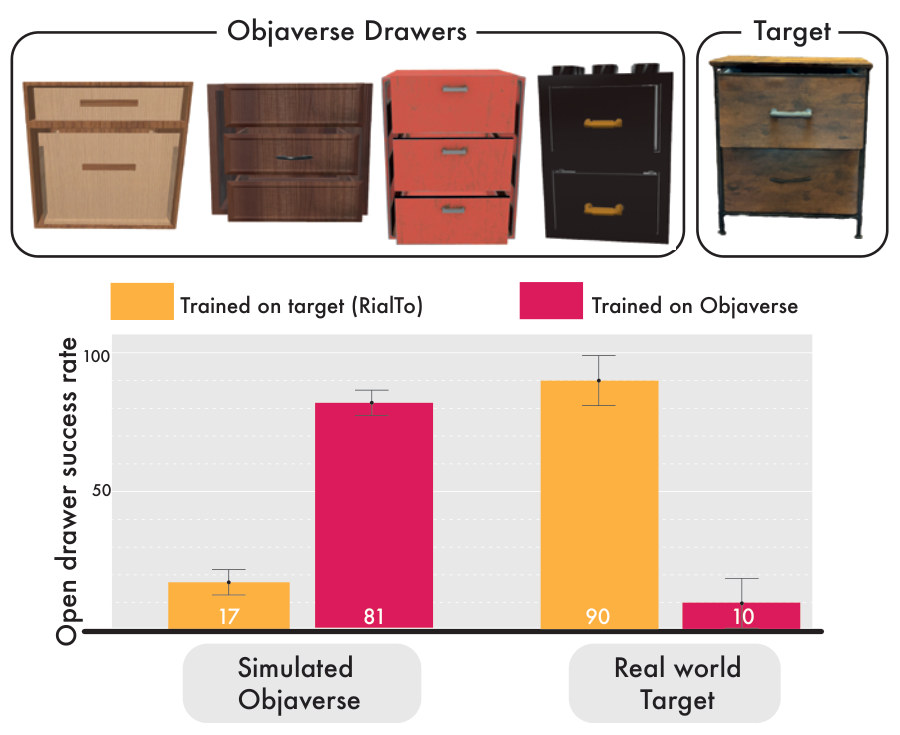
- 说明什么
- 同样的人工，twin 在目标上好得多：真机 90% 对 10%。再加合成资产也没提升（Table XI：90 / 90 对 90 / 80）。
- 在故事里
- 支撑"为一个现场定制，比广撒资产更省"。
- 指标
- Open drawer 成功率；左半是 sim，右半是真机。
- 怎么评测
- 花大致相同的时间收 4 个 Objaverse 抽屉，20 条 demo 训多任务 policy（§IV-C1）。
- 论文自己承认 4 个资产很少，把 articulated 物体转成 sim-ready USD 不容易。所以这只说明小规模合成不如 twin，不能排除大规模合成（我的判断）。
E5起步的 demo 可以换成 sim demo 吗？§IV-C2
- 说明什么
- 两者接近，只要保留真机 co-train。Fig. 6 橙对红：plate 80 / 70 / 60 对 90 / 60 / 50，book 70 / 70 / 70 对 90 / 70 / 60，drawer 100 / 80 / 80 对 90 / 90 / 90。Table III 的 sim 成功率也几乎相同（E8）。
- 在故事里
- 说明 inverse distillation 是"能只用真机 demo"，而不是性能来源；真机数据的关键位置在 Stage 4。这句是我的解读。
- 指标
- 同 E1，数字读自 Fig. 6（图见 E3）。
- 怎么评测
- Plate、book、drawer 三个任务。
- 每组 10 次量级的 rollout，差 10 个百分点在误差棒内。
E6出了实验台还行吗？§IV-D
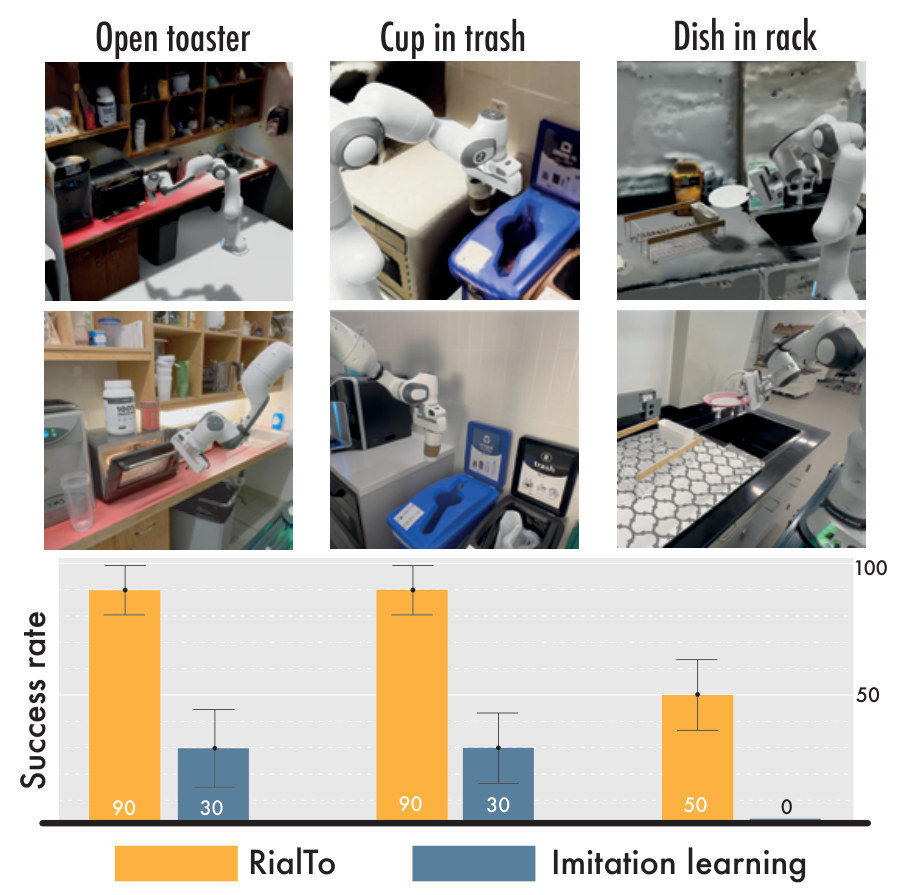
- 说明什么
- 仍然更好：3 个任务平均提升 57%（§IV-D）。Dish in rack 只有 50%。
- 在故事里
- 说明流程不依赖实验台背景。
- 指标
- 真机成功率；图没说这是哪一档难度，Open toaster 的 90 / 30 和 Fig. 5 的 pose 档相同。
- 怎么评测
- Open toaster、Cup in trash、Dish in rack，场景都不受控。
- "57%"同样是百分点差（76.7 − 20，我的计算）。
E7训练时加 distractor 有用吗？§V-A
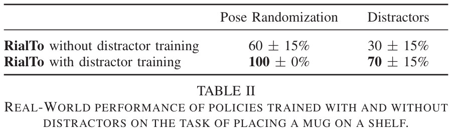
- 说明什么
- 更稳，连没杂物时也涨。论文认为它也帮了 sim-to-real。
- 在故事里
- Stage 4 distractors 的单独贡献。
- 指标
- 真机成功率，mug on shelf。
- 怎么评测
- 只在一个任务上比。
- 对 BC 加点云 distractor 没有用（Table IX，drawer：40 / 50 / 10 对 50 / 20 / 10），作者猜因为这样加出来没有遮挡。
E8RL 不用 demo 行吗？§V-B
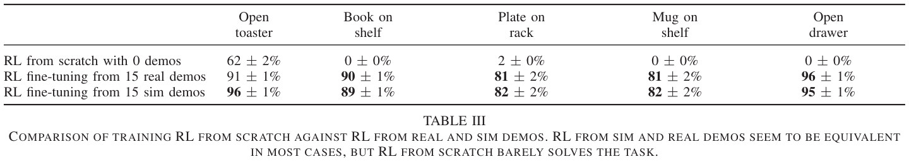
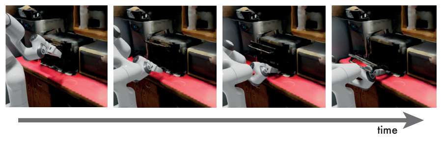
- 说明什么
- 没有 demo 基本学不会，学会的也不能用。5 个任务里 3 个 0%；toaster 的 62% 靠 joint 的轻微错位，不安全也不能迁移（§V-B，§XI-B）。
- 在故事里
- 支持 demo 的两个作用：探索，和把 policy 留在物理可信的区域。
- 指标
- sim 成功率（§VIII 的 success function）。
- 怎么评测
- 同一 twin，同样 sparse reward。
- "不能迁移"是作者判断，没有上真机测。
E9为什么不直接 RL from vision？§V-C，App. XI-A
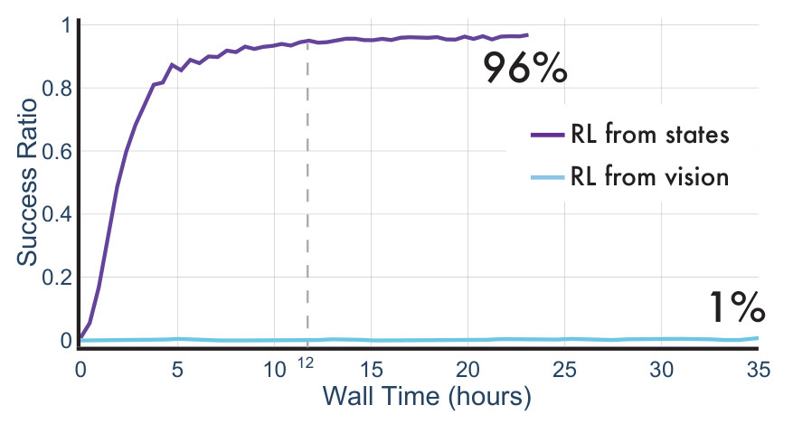
- 说明什么
- state 版快得多：12 h 96%，vision 35 h 1%。所以 inverse distillation 的额外步骤值得。
- 在故事里
- 解释为什么要绕道 state。
- 指标
- sim 成功率 vs 墙钟时间，open drawer。
- 怎么评测
- 同一张 GPU 上 vision 的 batch 小 100 倍，渲染点云约慢 10 倍（§XI-A）。
- 只比 sparse reward 这一种设定。
E10造一个 twin 要多少人工？§VI，App. XIII
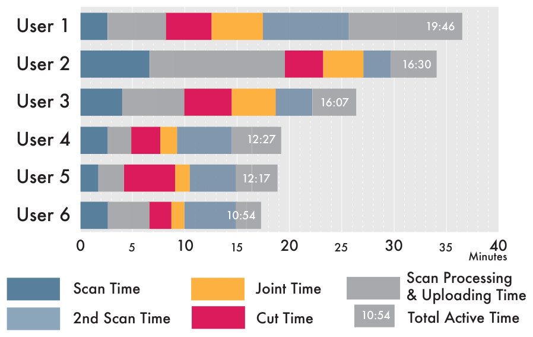
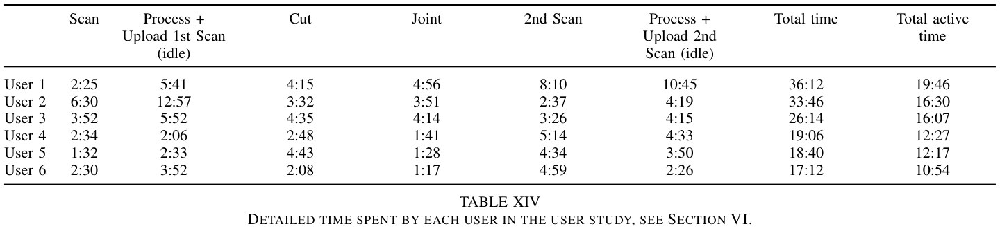
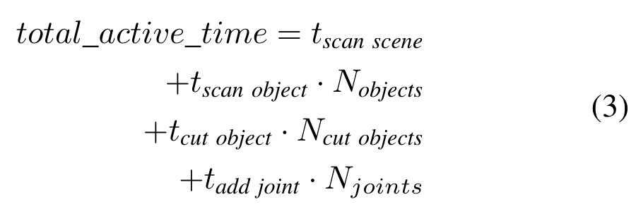
| 符号 | 白话 | 均值（§XIII-A） | toaster 场景的数量 |
|---|---|---|---|
t_scan scene | 扫一个大场景 | 3:14 | 1 次 |
t_scan object · N_objects | 每多扫一个物体 | 4:50 | 1 个（toaster） |
t_cut object · N_cut objects | 每从 mesh 切一个物体 | 3:40 | 1 个（门） |
t_add joint · N_joints | 每加一个 joint | 2:54 | 1 个（门轴） |
代入得 3:14 + 4:50 + 3:40 + 2:54 = 14:38（我的计算），和 14:40 只差取整。toaster 的数量是我按项目页 GUI 视频数的，论文没有给 toaster 自己的时间。
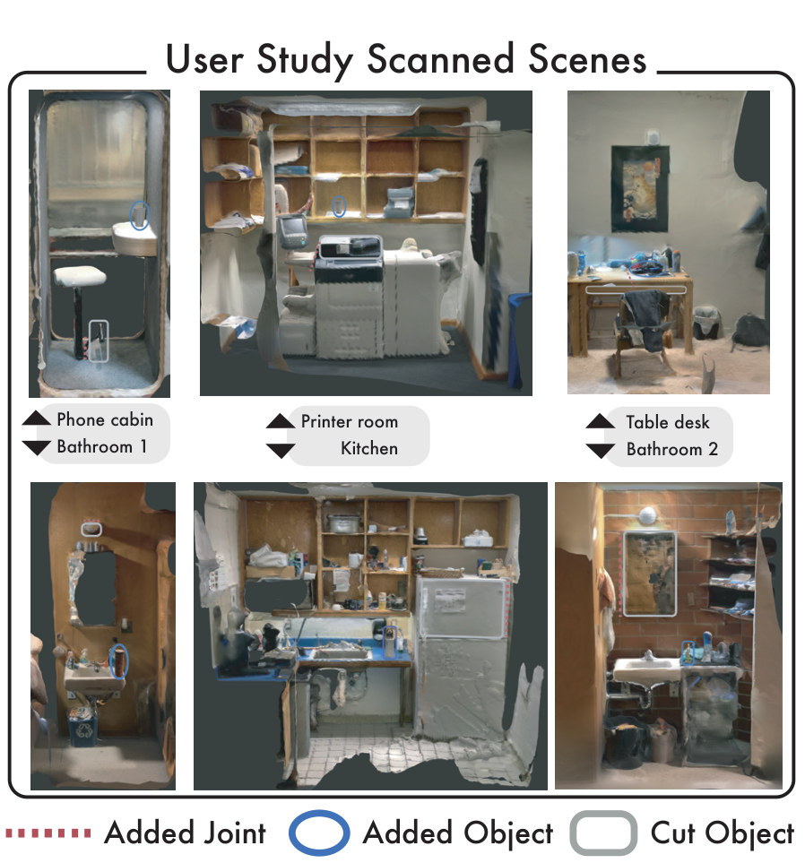
- 说明什么
- 人工短：平均 14:40 active、25:12 总时长（§VI）。专家 User 6 10:54，比最慢的 User 1（19:46）快近一倍；去掉专家平均 15.42 分钟（§XIII）。
- 在故事里
- 撑起"minimal human effort"：twin 的人工低于多收 demo 的人工（E2）。
- 指标
- 每步计时；active = Scan + Cut + Joint + 2nd Scan，不含两次 Process + Upload（idle）。这是我核对 Table XIV 得到的：5 行严格吻合，User 4 的单项之和比表中 active 和总时间都少 10 秒（12:17 对 12:27），应是表内小错。
- 怎么评测
- 6 人：User 1–5 没碰过 simulator，User 6 用过这个 GUI；User 2 远程按文字说明做。
- 任务：扫大场景、切一个物体、扫并上传一个小物体、加一个 joint；Polycam + AR Code。
- 只量场景构建；论文没有用这些场景训练 policy，也没评估 twin 精度。§XIII 写到 User 4、5 的快扫描让背景细节变差。
- §III-B 说"a couple of articulated objects in under 15 minutes"，研究实际只有 1 个 joint。Eq. 3 的线性没有用更大的场景验证。
E11sim 和真机差多少？App. XI-F
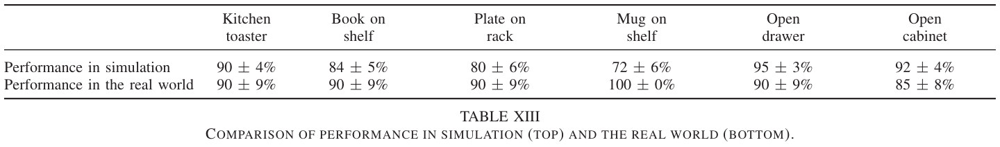
- 说明什么
- 看不出 sim-to-real gap：6 个任务里差距都在 10 点内，除了 mug（+28）。作者解释：sim 故意比真机难。
- 在故事里
- 说明 twin + co-train 足以让 sim 的成功率对真机有参考价值。
- 指标
- 最终点云 policy 的成功率，上行 sim，下行真机（pose 档，和 Fig. 5 第一行相同）。
- 怎么评测
- 因为 sim 被加难，这张表不能当 twin 精度的度量（我的判断）。
Limits
局限和开放问题
- 论文自述（§VII）：点云依赖深度传感器，细、透明、反光物体不行。
- 论文自述：目前只限 articulated rigid bodies；deformable 留待以后。
- 论文自述：控制器偏慢，任务偏 quasi-static；更动态的任务需要辨识物理参数。
- 论文自述：每个任务约 2 天墙钟（7 h + 20 h + 24 h，§XIV），不适合 continual learning。
- Multi-task（§XI-E）：mug on shelf 从 100% 掉到 80%，drawer 持平 90%，只在这两个任务上测。
- 论文没说：twin 怎么和机器人、标定相机的坐标对齐（§X 只说相机已标定，Table V 只列参数）。
- 论文没说：success function、随机范围、固定哪些 joint 要多少人工。这些都是每个任务手写的（§VIII，Table IV）。
- 我的判断：每格约 10 次 rollout，误差棒 ±9 到 ±17，小差距（如 E5）不能下结论；且"最好的 policy"怎么选论文没说。
For Agent-centric real-to-sim
对我们有什么用
- 假设的物理：RialTo 的 mass、friction 也是假设值（§VIII-A），靠闭环 policy、BC 项和真机 co-train 补偿，并限定在 quasi-static 任务（§VII）。r2s-lite 回放开环的录制动作，没有这层补偿，所以"默认物理够用"不能直接搬到我们的 replay（推断）。
- 第一份 sim-to-real 证据：三档扰动 × 至少 10 次真机 rollout + Table XIII 的 sim / 真机对照，可当我们训 policy 时的最低表格。但 book on shelf 少于 15 条 demo 转不进 sim（Table X），我们一个场景一条录像，走不了 inverse distillation；r2s-lite 回放成功的 episode 本身就相当于一条带 state 的 sim demo，更接近 Fig. 6 的 sim-demo 路线（推断）。
- 它不解决我们的弱点：20 cm 的相机位姿和物体角色错误，RialTo 是靠人绕开的：现场扫描、相机已标定、success function 手写（§VIII）。Fig. 15 倒是一个警告：joint 放偏一点 RL 就钻空子，回放通过的 twin 不等于能训 RL。